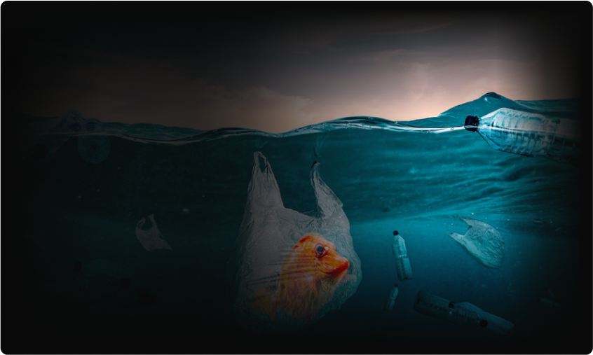
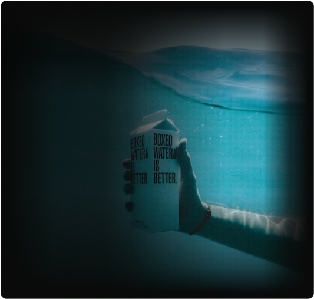
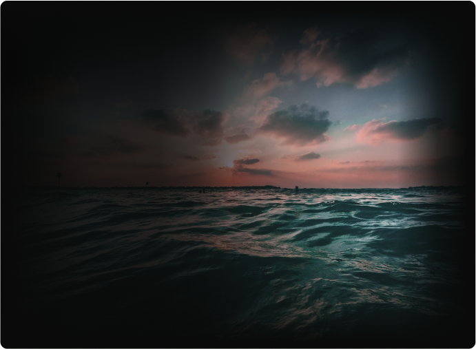
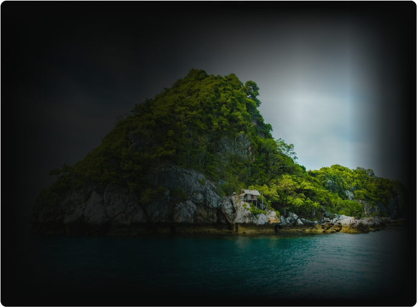
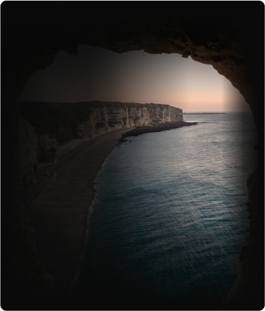
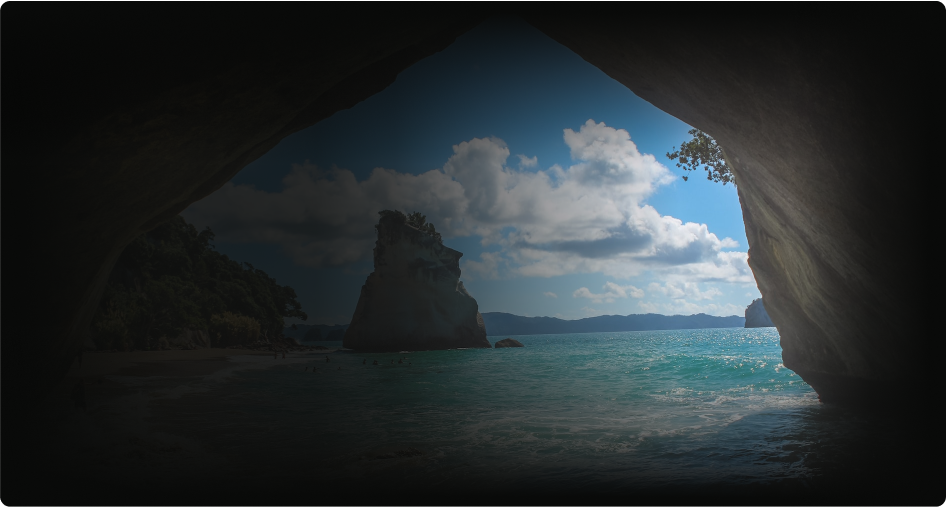

Pencemaran laut merupakan salah satu masalah lingkungan yang serius di dunia saat ini. Laut yang seharusnya menjadi sumber kehidupan yang kaya dan beragam menjadi tercemar oleh bahan-bahan berbahaya dan zat-zat asing. Penyebab pencemaran laut dapat berasal dari berbagai aktivitas manusia yang tidak bertanggung jawab.
01.
Salah satu penyebab utama sampah plastik di laut adalah pembuangan
sampah yang tidak tepat. Banyak orang yang membuang sampah plastik
ke sungai, dan sungai-sungai ini kemudian mengalir ke laut.
02.
Salah satu penyebab utama adalah Banyak orang tidak menyadari bahwa sampah plastik dan limbah lainnya dapat mencemari laut, merusak ekosistem, dan mengancam
kehidupan laut.
03.
Polusi air yang disebabkan oleh limbah industri, pertanian, atau aktivitas pemukiman
yang tidak terkelola dengan baik dapat mencemari laut. Bahan kimia, pestisida, logam berat, dan zat-zat berbahaya lainnya dalam air mencemari ekosistem laut.
04.
breathtaking beauty of the underwater world while shedding
light on
the
pressing issue of marine pollution, specifically
focusing on the presence of plastic
waste.
05.
breathtaking beauty of the underwater world
while shedding light on
the pressing issue of
marine pollution,
06.
breathtaking beauty of the underwater world while shedding
light on
the
pressing issue of marine pollution, specifically
focusing on the presence of plastic
waste.
.png)